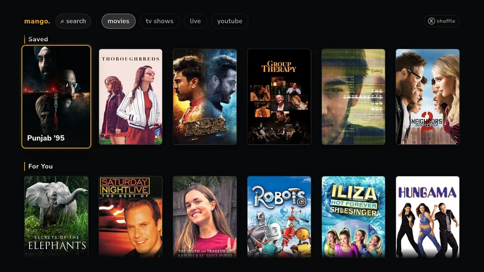
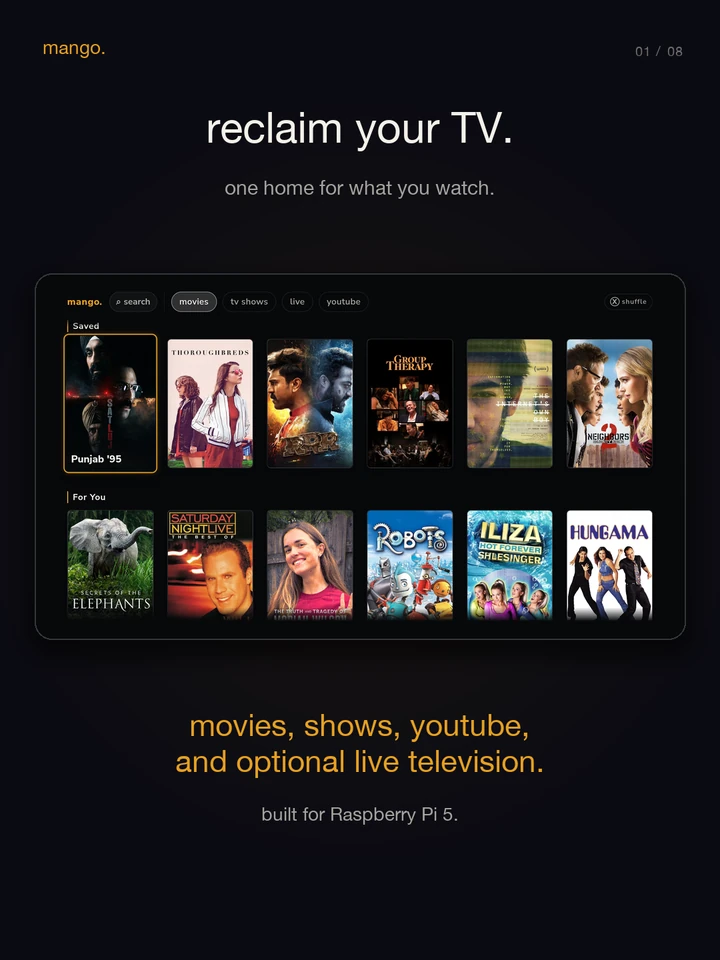
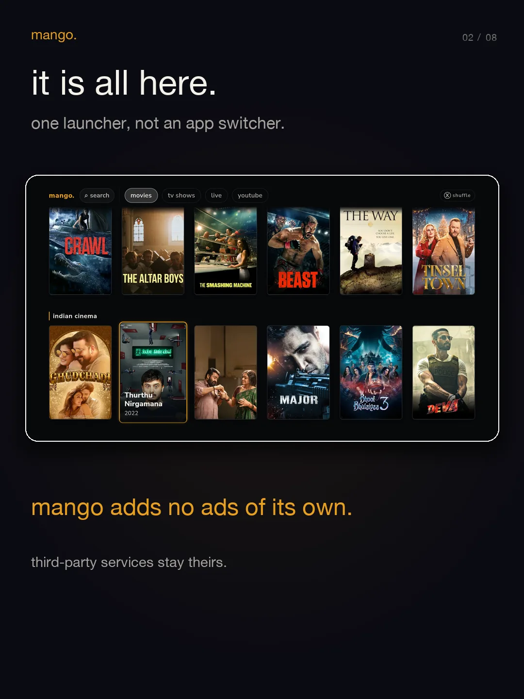
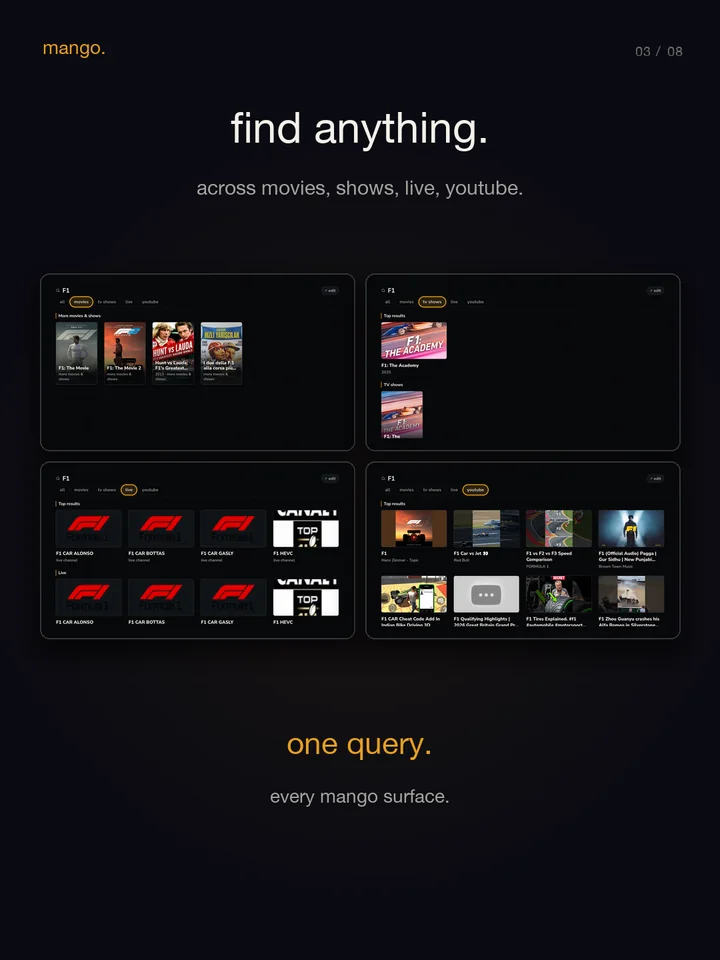
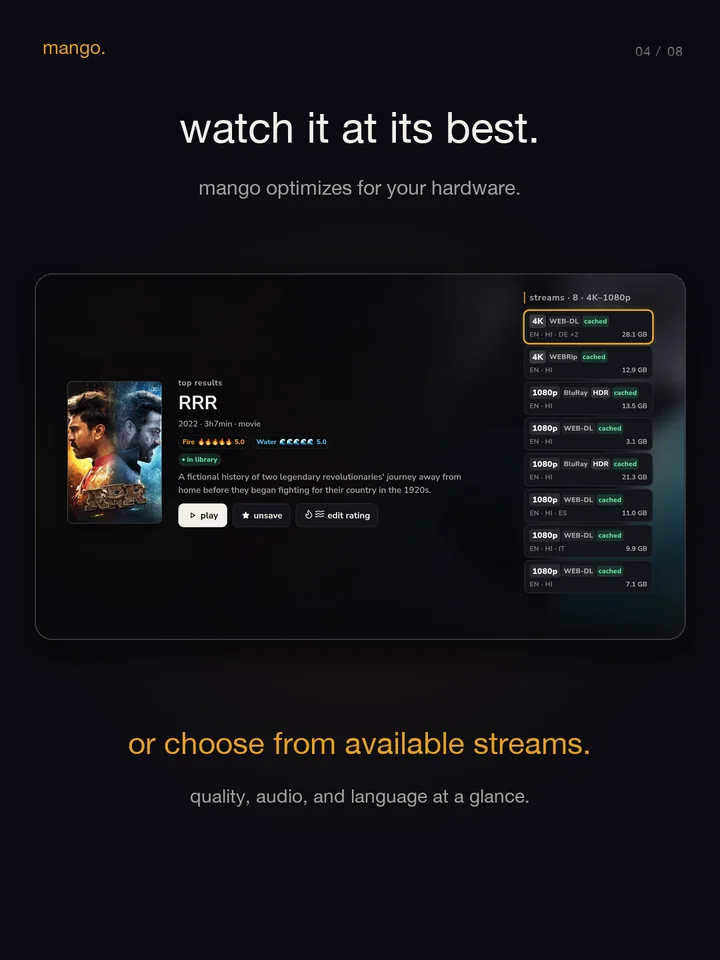
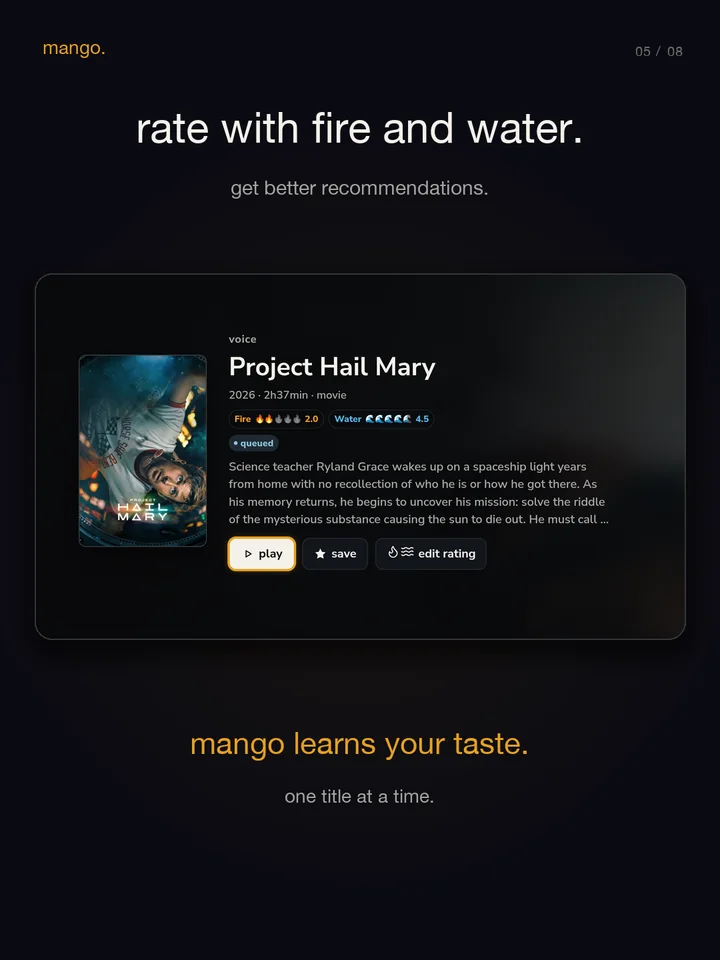
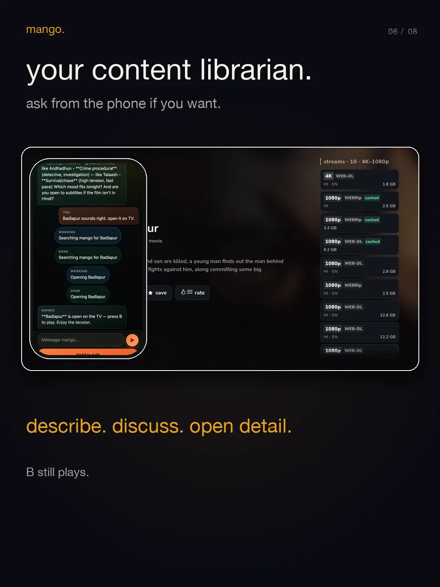
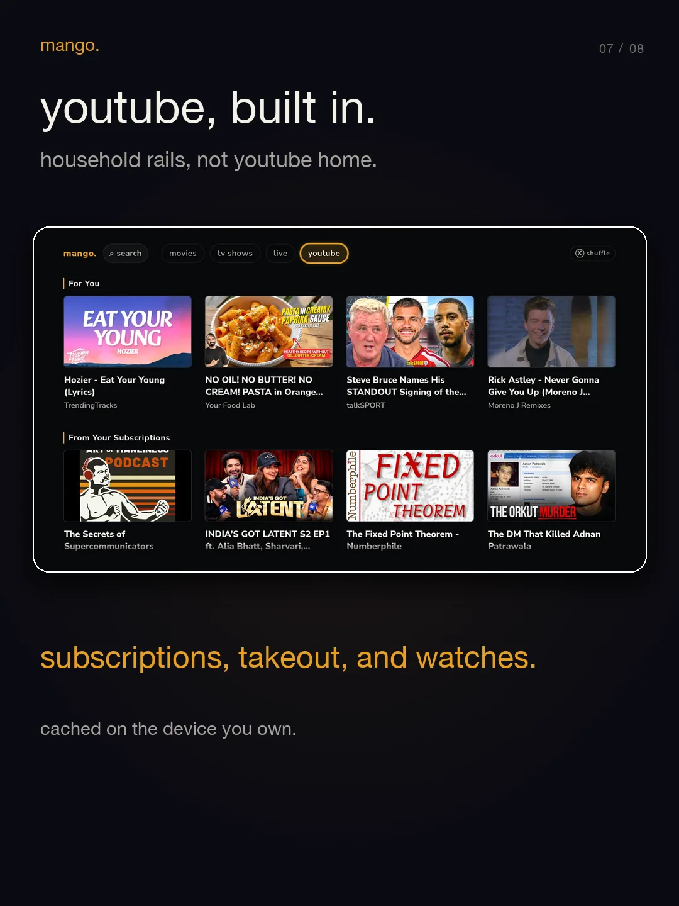
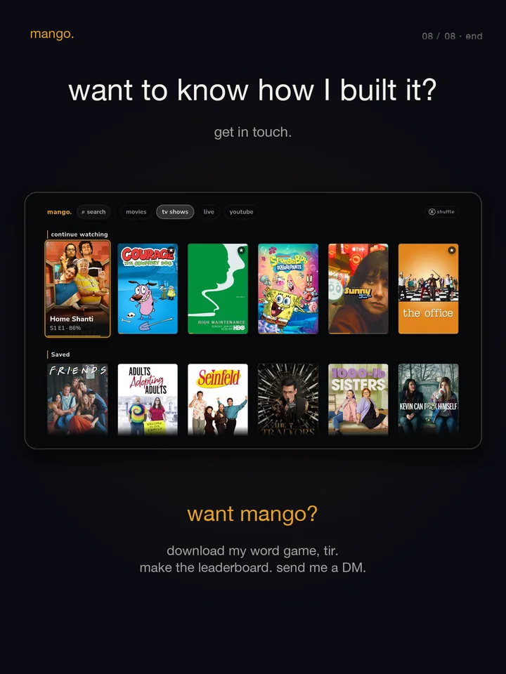

browse and search.
movies, TV shows, youtube, and optional live results share one controller-first launcher.
mango · for the living room
a household-owned TV experience for Raspberry Pi 5. movies, shows, youtube, and optional live television in one place.

inside mango
every frame comes from the current Raspberry Pi interface or phone companion. no invented product UI.








what stays together
movies, TV shows, youtube, and optional live results share one controller-first launcher.
open Detail, compare available quality, audio, language, and size, then press B to watch in mpv.
Fire and Water ratings shape cached household recommendations. progress, Saved, and history stay local.
the optional librarian can clarify, curate, save, and open a title on the TV. the controller still starts playback.
the boundary
the launcher, unified Search, local library, household rails, phone librarian, and native mpv path are working product surfaces.
the Raspberry Pi, controller, accounts, addon manifests, credentials, and rights to the media you access.
no-SSH first boot, intentional display sleep, native HDR, and final whole-product couch sign-off.
mango is an alpha self-hosted project, not a finished retail appliance. mango inserts no advertising into its own interface; third-party services remain their own. mango is not affiliated with youtube, Stremio, debrid services, IPTV providers, studios, or broadcasters.
mango · by aaam.dev
get in touch for more information, or follow the source as the appliance takes shape.